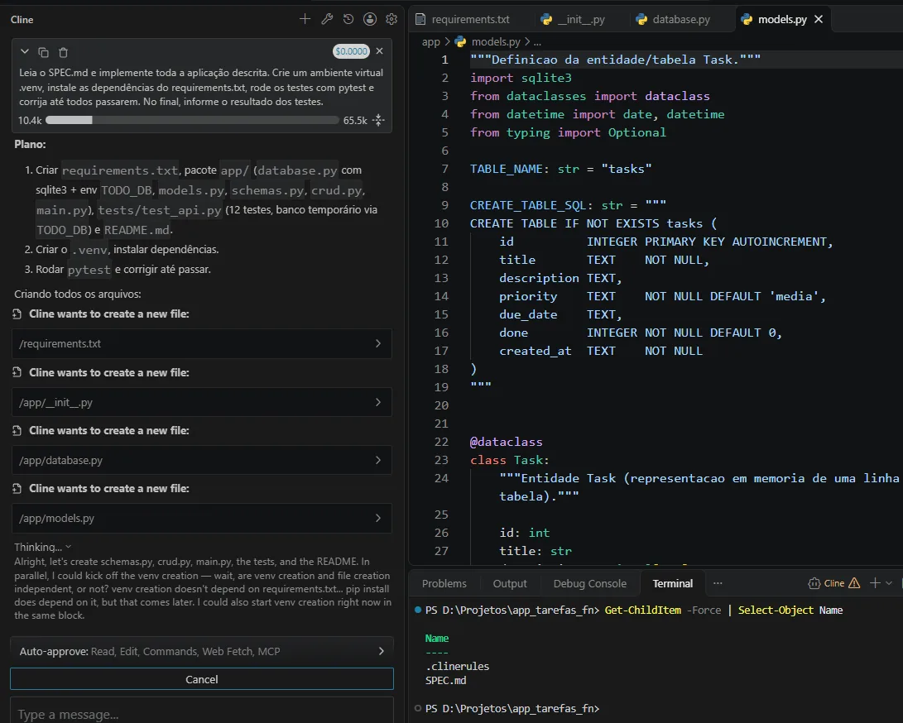

A local LLM for coding on a 20 GB GPU
Tools like Claude Code, GitHub Copilot and Cline changed how we write code, but all of them send your code to someone else’s server. If you work with sensitive databases, the question is obvious: can you have something similar in-house, on a machine you already own? I set up, tuned and measured a coding assistant that runs entirely on a workstation, with no cloud.
Icon Library itself already runs a small model on a server of mine, Gemma 3 with 4 billion parameters, for two jobs: describing the icons submitted to the community before I moderate them and, once a day, turning searches with no results into synonyms, so that someone who searches for “lixeira” (Portuguese for trash can) finds the icons named trash. Those are short tasks, and a small model is enough. Writing code is another scale, and this test measures how far a local model goes when the job is programming.
In short
- 114 tokens per second with Qwen3-Coder 30B fully on the GPU: great for autocomplete and quick questions.
- 12 out of 12 coding tasks right with the two models that reason before answering.
- 15 out of 15 acceptance tests on an API built from scratch in agent mode, in 18 minutes, with no help.
- There is one bottleneck: video memory. What fits on the GPU flies; what spills over depends on system RAM.
How I measured
I treated it as a proof of concept, with the system installed from scratch just for this and wiped afterwards. I measured three things:
- Speed: generation tokens per second and time to first token, with prompts from one thousand to 56 thousand tokens.
- Code quality: 12 tasks with automated tests, actually run, no subjective judging.
- Agent mode: VS Code with Cline gets a specification and has to create the application, install dependencies, write tests and fix things until they pass.
The machine
An HP Z4 G5, an office workstation, far from an AI server. For an LLM, what matters is the GPU: an NVIDIA RTX 4000 Ada with 20 GB and about 360 GB/s of memory bandwidth. The rest only helps when the model does not fit on the card.
| Part | Specification | Role in the test |
|---|---|---|
| GPU | RTX 4000 Ada · 20 GB GDDR6 · ~360 GB/s | Where the model needs to live |
| CPU | Xeon w5-2555X · 14 cores | MoE experts when the model does not fit |
| RAM | 128 GB DDR5 ECC at 4800 MT/s | Room for the weights that spill over |
| Disk | 2 TB NVMe | Models up to 89 GB |
The system is Ubuntu 26.04 LTS in text mode: with no desktop, the GPU is free
for the model, and access is over SSH. I used the NVIDIA 595 driver with CUDA
13.1 and llama.cpp built for the Ada architecture. llama-server
exposes an OpenAI-compatible API on the local network, and VS Code with Cline,
on my PC, talks to it.
The models
The golden rule of local LLMs is that the whole model fits in video memory, along with the context cache. I picked three open-weight models with very different profiles:
| Model | Architecture | Where it runs |
|---|---|---|
| Qwen3-Coder 30B-A3B, made for code | MoE, ~3 billion active parameters per token | 100% on the GPU |
| Qwen3.8 27B, general-purpose with reasoning | Dense | 100% on the GPU |
| Qwen3.8 Flash-Next, large general-purpose with reasoning | Large MoE, ~89 GB | GPU, with the experts in RAM |
Flash-Next breaks the golden rule on purpose: there is no way it fits in 20 GB. The shared part of the model and the cache stay on the GPU; the experts go to RAM, with an 8 GB cache on the card for the most used ones. It answers the question: is it worth waiting longer for a much bigger model?
Speed: memory bandwidth rules
The measurements go through the API with the prompt cache off, so the time to first token includes reading the whole context. The tables show what happens as the prompt grows, which is exactly what an agent does when it reads the project’s files.
Generation speed
| Model | Short prompt | 7K tokens | 28K tokens | 56K tokens |
|---|---|---|---|---|
| Coder IQ4, f16 KV cache | 114.1 t/s | 83.5 t/s | 58.7 t/s | — |
| Coder Q3, q8 KV cache (starting setup) | 108.5 t/s | 81.7 t/s | 40.2 t/s | 25.2 t/s |
| Qwen3.8 27B | 21.8 t/s | 21.2 t/s | 19.3 t/s | — |
| Qwen3.8 Flash-Next | 17.0 t/s | 17.4 t/s | 18.2 t/s | — |
Time to first token
| Model | Short prompt | 7K tokens | 28K tokens | 56K tokens |
|---|---|---|---|---|
| Coder IQ4, f16 KV cache | 0.2 s | 1.6 s | 10.0 s | — |
| Coder Q3, q8 KV cache (starting setup) | 0.3 s | 2.3 s | 13.8 s | 37.2 s |
| Qwen3.8 27B | 1.1 s | 6.9 s | 29.0 s | — |
| Qwen3.8 Flash-Next, 2048 batch | 5.6 s | 21.0 s | 73.2 s | — |
| Qwen3.8 Flash-Next, 8192 batch | — | 10.0 s | 37.5 s | — |
Qwen3-Coder activates only about 3 billion parameters per token and fits entirely on the GPU: it goes past 100 tokens per second with a short prompt and reads context at 3 to 4 thousand tokens per second. The dense 27B has to read every weight for each token and stays at about 20. Flash-Next fetches experts from RAM for every token and generates about 17, whatever the prompt size, because its limit is DDR5 bandwidth, not the GPU.
Tuning that paid off
| Change | Model | Before | After |
|---|---|---|---|
Micro-batch -ub 2048 (reading 7K tokens) | Coder Q3 | 3,344 t/s | 3,854 t/s |
| f16 KV cache instead of q8 (generating with 28K tokens) | Coder Q3 | 43.2 t/s | 58.1 t/s |
| IQ4_XS quantization instead of Q3 (short prompt) | Coder | 108.5 t/s | 114.1 t/s |
Batch -ub 8192 (first token with 28K) | Flash-Next | 73.2 s | 37.5 s |
The last one is the most interesting. With the experts in RAM, every prompt batch copies weights over PCIe. Bigger batches make one copy serve more tokens, and prompt reading doubled, from ~370 to ~740 tokens per second. With a 16,384 batch reading rose to 877, but generation fell from 17 to 13. Not worth it.
Quality: speed is not everything
I wrote 12 everyday programming tasks: implement functions (a duration parser, intervals, an LRU cache, Dijkstra), validate a Brazilian tax ID (CPF), fix bugs, refactor, write SQL with window functions and predict the output of a piece of code. Each answer runs against assertions: it passes or it doesn’t.
| Model | Correct | Time per task | Where it failed |
|---|---|---|---|
| Coder 30B Q3 | 69% (25 of 36) | 1.5 s | Duration parser, predicting output, LRU, Dijkstra |
| Coder 30B IQ4 | 83% (30 of 36) | 1.6 s | Duration parser, predicting output |
| Qwen3.8 27B | 100% (12 of 12) | 36 s | — |
| Qwen3.8 Flash-Next | 100% (20 of 20) | 41 s | — |
Coder ran each task 3 times; the 27B, once; Flash-Next, one to three times. Coder is fast and good, but it fails consistently in two places: the parser’s edge cases and predicting code output, which takes “running it in your head”. The more precise IQ4 version fixed the LRU and Dijkstra that Q3 got wrong. Both Qwen3.8 models got everything right, but they think before answering: about 40 seconds per task, against 1.5 for Coder.
For autocomplete and quick questions, Coder on the GPU is unbeatable. For work that has to be right, reasoning makes the difference.
Agent mode: the test that matters
Getting one function right does not tell you whether the tool can work alone.
For that I wrote a SPEC.md for a task API in FastAPI and SQLite,
with seven endpoints, validation, pagination and statistics. The request to
Cline was one sentence: read SPEC.md, implement it, create the virtual
environment, run the tests with pytest and fix things until they pass. Besides
the agent’s own tests, an independent suite of 15 acceptance tests checks the
application against the specification.
| Run | Time | Acceptance tests | Agent’s pytest |
|---|---|---|---|
| Qwen3-Coder, run 1, no rules | 4.5 min | 0 of 15 | 4 of 13 |
| Qwen3-Coder, run 2 | ~30 min | 1 of 15 | 8 of 13 |
| Qwen3-Coder, run 3, with rules and review | ~15 min | 9 of 15 | 9 of 13 |
| Flash-Next, single run, no help | 18 min | 15 of 15 | 13 of 13 |
Qwen3-Coder: fast, but runs out of breath
The first delivery came in 4.5 minutes, and it was broken: Pydantic v1 in a v2
project, tables that were never created, a package without
__init__.py and the statistics endpoint missing. In the next runs
the model started reading the same file in a loop, with corrupted Windows paths
(the backslashes vanished in its tool calls), until Cline stopped the task. With
explicit rules in a .clinerules file and a review pointing at the
failures, it reached 9 of 15, after almost an hour.
Flash-Next: slow and steady
With medium reasoning effort and 64K tokens of context, Flash-Next read the specification, planned in three steps, created every file, installed the dependencies and ran the tests. In 18 minutes: 13 of 13 pytest tests passing, showing the real output instead of claiming they passed, and 15 of 15 on the acceptance tests. It used 24.5K of its 65.5K context tokens and needed no help from me.


At 17 tokens per second every answer takes a while, and reading the context costs 10 to 37 seconds. It is the pace of a careful colleague: you hand over the task, do something else and come back to review. Over its three runs Coder spent about 50 minutes and needed help; Flash-Next generated tokens six times slower and finished in 18. The big model was not faster. It was more reliable, and that is why it finished first.
What I learned
- Video memory is the budget. What fits on the GPU flies; what spills over depends on DDR5 and PCIe bandwidth. More RAM or CPU does not change that.
- MoE is the shortcut for mid-range cards. With about 3 billion active parameters per token, a 30B model goes past 100 tokens per second on a 20 GB GPU.
- An f16 KV cache is worth the memory. With long context it generated 35% faster than q8. It pays to shrink the window to make it fit.
- Agents need context. At 32K tokens Coder went into loops; 64K was the comfortable minimum for a small project.
- Written rules fix environment problems. A
.clinerulesfile with relative paths, the.venvPython and “show the real test output” removed the Windows errors. - Measure with tests that run. “Looks right” fooled me several times; the independent acceptance suite showed the real difference between the models.
Verdict
The machine works, with a clear split of roles:
- Interactive, with Qwen3-Coder 30B on the GPU: autocomplete, explanations and code snippets with instant answers. Good quality, but I would not leave it alone on a project.
- Delegated tasks, with Qwen3.8 Flash-Next: complete, correct work in agent mode, at the pace of someone working in the background.
For Flash-Next to answer like an interactive tool, the game changer is the GPU. A 96 GB card such as the RTX PRO 6000 Blackwell Max-Q (300 W, ~1.8 TB/s) fits in the same Z4 G5 and would keep the whole model in video memory, with about five times today’s bandwidth. Going by the bandwidth ratio, the estimate is 80 to 110 tokens per second, with the first token in a few seconds. It is a projection, not yet measured.
To reproduce
The final Flash-Next command line:
llama-server -m Qwen3.8-Flash-Next-UD-IQ4_XS-00001-of-00004.gguf \
-c 65536 -ctk f16 -ctv f16 \
-ngl 999 -fa on --jinja \
-b 8192 -ub 8192 \
--cpu-moe --moe-cache-mib 8000 \
-ot per_layer_token_embd.weight=CPU \
-t 14 -np 1 --temp 1.0 --top-p 0.95 --top-k 20 --min-p 0.0 \
--chat-template-kwargs '{"reasoning_effort":"medium"}'-c 65536 -ctk f16 -ctv f16: 64K tokens of context, f16 KV cache.-ngl 999 -fa on: everything that fits on the GPU, with flash attention.-b 8192 -ub 8192: big batches, prompt reading twice as fast.--cpu-moe --moe-cache-mib 8000: experts in RAM, with an 8 GB cache on the GPU.
For Coder 30B IQ4: -c 32768 with an f16 cache for interactive use,
or -c 65536 with a q8 cache for agent mode,
-b 4096 -ub 2048 and temperature 0.7.